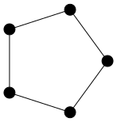

With geng we can generate graphs in graph6 format. For example, to generate all connected simple graphs of order four:
$ geng -qc 4
CF
CU
CV
C]
C^
C~Here, the -q switch suppresses some auxilliary output and -c specifies connected graphs.
We can specify a class of graphs having certain properties, such as size, degree bounds, existence of cycles, connectedness or bipartiteness. For example, to generate all connected, bipartite graphs of order four with maximum degree two:
$ geng -qcb -D2 4
CU
C]We can visualise these graphs using listg to convert the output to DOT format and the using one of the Graphviz programs to draw them. If we have many options to pass to the drawing program it makes sense to pack them all into a variable for future use.
$ options="-Nfixedsize=true\
-Nlabel=\
-Nshape=circle\
-Nheight=0.2\
-Nwidth=0.2\
-Nstyle=filled\
-Nfillcolor=black"
$ geng -qcb -D2 4\
| listg -y\
| circo -Tsvg -O $optionsThese two graphs answer a very easy conjecture about the existence of graphs having the following properties:
- four vertices,
- maximum degree two,
- connected,
- bipartite.
Many problems in graph theory can be expressed as the existence of graphs satisfying a list of properties like this. The existence of Moore graphs, for example, is a problem yet to be completely resolved which takes this simple form. So it might be nice to have a little program moore, that filters Moore graphs from the output of geng.
Then if we should wish, for example, to draw all Moore graphs on five vertices we can modify the above pipeline accordingly:
$ echo `geng -qc 5`
| moore
| listg -y
| circo -Tsvg -O $options
In this post we show how to program such a filter in Bash and Maxima, albeit one which is fatally flawed.
Moore Graphs
A Moore graph is a graph with diameter \(d\) and maximum degree \(k\) which has the maximum number of vertices for a graph with the same diameter and maximum degree.
In Cameron (1994) it is shown that a Moore graph is any graph satisfying the following conditions (any two of which imply the third):
- \(G\) is connected with maximum degree \(k\) and diameter \(d\);
- \(G\) has minimum degree \(k\) and girth \(2d + 1\);
- \(G\) has \(1 + k\frac{(k - 1)^{d} - 1}{k - 2}\) vertices.
If the output from the pipeline at the end of the previous section is correct then there are only two Moore graphs of order five, \(K_{5}\) and \(C_{5}\).
\(d = 1\). \(K_{n}\) and \(C_{3}\) are the only Moore graphs.
\(d = 2\). The Hoffman-Singleton theorem says that a Moore graph must have \(k \in \{2, 3, 7, 57\}\).
- \(k = 2\) the unique Moore graph is \(C_{5}\).
- \(k = 3\) the unique Moore graph is the Petersen graph.
- \(k = 7\) the unique Moore graph is the Hoffman-Singleton graph (shown below).
- \(k = 57\) unknown whether there exists a hypothetical Moore graph which would necessarily have girth 5 and order 3250.
\(d \geq 3\). According to Damerell (1973) and Bannai and Ito (1973) the only Moore graphs is \(C_{2d + 1}\).
To draw the Hoffmann-Singleton graph:
$ curl http://staffhome.ecm.uwa.edu.au/~00013890/remote/cages/cagesk7g05.s6\
| listg -y\
| circo -Tsvg -O $options
Processing Graph Data with Maxima
The three conditions in the previous section form the basis of the Moore graph filter below. By itself we can’t use geng to identify Moore graphs because any two of these conditions involve computing either the girth or diameter.
Maxima, the computer algebra system, has a graphs library which includes functions that compute the girth and diameter of graphs. Even better, it also provides conversion to and from graph6 format.
Because the program we are going to write is supposed to work within a pipeline we will use Maxima in batch mode, rather than interactively. To avoid working with multiple source files we will use the --batch-string option to pass a program to Maxima as a string.
One drawback with Maxima is that there is a little bit of processing to be done one the output of any program because, even running in batch mode with minimal verbosity, Maxima still outputs a lot of extraneous text.
As the basic structure of the program is relatively complicated we will begin with an example. This example also serves to highlight an important consideration when it comes to the speed of the program.
In the listing below is a Bash program that calculates the degree of every graph in an input string of whitespace-delimited graphs in graph6 format.
#!/bin/bash
while read
do
s="
load(graphs)$
g: graph6_decode(\"$REPLY\")$
graph_size(g);
"
maxima --very-quiet --batch-string="$s"\
| tail -n 1\
| tr -d ' \t\r\f[]'\
| tr ',' '\n'
doneUnfortunately, this approach is incredibly slow for at least two obvious reasons. The first is that for every graph we run a new instance of Maxima. The second is that each of these many instances of Maxima has to import the graphs library.
A different approach, which is much faster, is to read the entire list of graphs as a string, convert that string into the string representation of a Maxima list of strings and hand that to one instance of Maxima to process. The following listing does just that.
#!/bin/bash
read g6raw
g6proc=$(echo $g6raw |
awk '{ print "\"" $1 "\"" "," }' RS=' ' ORS=' ' |
sed '$s/. $//')
g6list="["${g6proc}"]"
s="
load(graphs)$
g6list: $g6list$
glist: map(graph6_decode, g6list)$
l:map(graph_size, glist)$
printf(true, \"~{~a,~}\", l);
"
maxima -q --very-quiet --batch-string="$s"\
| tail -n 1\
| tr -d ' \t\r\f'\
| tr ',' '\n'\
| head -n -1This approach presents some new problems. Firstly, because we read the entire output of geng into one string we have to use echo geng. A worse problem is that we quickly run out of memory, even for very small values of the graph order. Nevertheless, for the sake of experimentation, we continue with this approach for the Moore graphs application. In the worst case it will make a reasonable base for future development.
Filtering Moore Graphs
Assuming that input is a string of whitespace-delimited graphs in graph6 format we start by building a Bash string representing a Maxima list of the same graph6 format strings.
read g6raw
g6proc=$(echo $g6raw |
awk '{ print "\"" $1 "\"" "," }' RS=' ' ORS=' ' |
sed '$s/. $//')
g6list="["${g6proc}"]"The AWK program here surrounds all strings with double-quotes and adds a separating comma. The Sed hack removes the last comma and the final assignment statement puts the entire list of strings into a string surrounded by a pair of square braces, the Maxima syntax for a list.
Now we have the data in a format that can be passed to Maxima we build the entire Maxima program as a Bash string. The core of the program is a function moore1(G) which decides whether the graph G is a Moore graph or not.
moore1(G):=
(
K: max_degree(G)[1],
k: min_degree(G)[1],
d: diameter(G),
g: girth(G),
is_connected(G) and is(g = 2*d + 1 and k = K)
)$Here max_degree, min_degree, diameter, girth and is_connected are all functions from the Maxima graphs library. The is function is one of the core Maxima functions for Boolean predicate testing.
The function moore1(G) has no return statement because Maxima functions which are made up from a simple list of statements in this way return the last evaluated value by default.
For comparision, although not discussed further here, we also implemented another two functions for testing whether a graph is a Moore graph or not. These are based on the remaining two ways of choosing a pair of conditions from the list above.
moore2(g):=
(
k: max_degree(g)[1],
d: diameter(g),
expected_order: 1 + k*(((k - 1)^d - 1)/(k - 2)),
is_connected(G) and is(graph_order(g) = expected_order)
)$
moore3(g):=
(
k: min_degree(g)[1],
d: (girth(g) - 1)/2,
expected_order: 1 + k*(((k - 1)^d - 1)/(k - 2)),
is(graph_order(g) = expected_order)
)$With the testing function implemented we turn to the graphs library and its graph6_encode and graph6_decode functions to convert the incoming data and the outgoing results.
g6list: $g6list$
glist: map(graph6_decode, g6list)$
moore_graphs: sublist(glist, moore1)$
map(graph6_encode, moore_graphs);All of the above code is the content of a Bash string which is handed to Maxima for batch processing. This approach makes it easy, e.g g6list: $g6list to pass data from Bash to Maxima. After the Maxima program has finished we need to use tail and tr to clean up the output so that we only see the graph data and none of the auxilliary output of Maxima.
maxima --very-quiet --batch-string="$s"\
| tail -n 1\
| tr -d ' \t\r\f[]'\
| tr ',' '\n'In its present state the final script correctly identifies the Moore graphs on at most six vertices. With some improvement we hope to extend this to graphs of order at most nine.